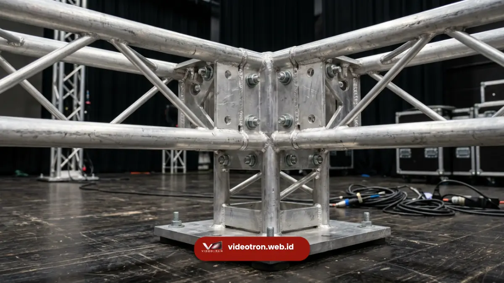

Solusi ground support installation videotron aman, stabil, dan cepat untuk event Anda. Konsultasi kebutuhan instalasi sekarang di videotron.web.id
- 1. Apa Itu Ground Support Installation pada Videotron?
- 2. Mengapa Ground Support Installation Dipilih untuk Instalasi Videotron Outdoor?
- 3. Bagaimana Proses Ground Support Installation Videotron Dilakukan?
- 4. Apa Beda Ground Support dan Rigging pada Instalasi Videotron?
- 5. Faktor Keamanan dan Kesalahan Umum dalam Ground Support Installation
Ground support installation adalah metode pemasangan videotron menggunakan rangka penyangga yang berdiri langsung di atas tanah tanpa bergantung pada struktur gantung.
Metode ini menjadi pilihan utama untuk panggung outdoor, konser, dan acara korporat berskala besar.
- Ground support installation memasang videotron menggunakan rangka mandiri yang berdiri di permukaan tanah atau panggung, bukan digantung dari atap atau truss ceiling.
- Metode ini ideal untuk lokasi outdoor, venue tanpa struktur atap permanen, dan event dengan kebutuhan layar videotron berukuran besar.
- Kestabilan struktur ditentukan oleh kualitas rangka, sistem pemberat (ballast), dan perhitungan beban angin yang akurat.
- Videotron.web.id menyediakan layanan ground support installation dengan perencanaan teknis yang disesuaikan kebutuhan event Anda.
Apa Itu Ground Support Installation pada Videotron?
Ground support installation adalah teknik pemasangan panel videotron pada rangka baja atau aluminium yang berdiri tegak di atas permukaan tanah, tanpa memerlukan titik gantung dari atap gedung atau truss ceiling.
Rangka ini disusun bertingkat mengikuti tinggi dan lebar layar videotron yang dibutuhkan, kemudian diperkuat dengan sistem pemberat atau pengikat tanah agar tetap stabil saat digunakan.
Berbeda dengan rigging yang menggantung layar dari struktur atas, ground support installation mengandalkan kekuatan dari bawah.
Pendekatan ini banyak dipilih untuk lokasi outdoor seperti lapangan, halaman gedung, atau area terbuka lain yang tidak memiliki titik gantung permanen.
Secara umum, sistem ground support terdiri dari beberapa komponen utama: rangka vertikal (tower), rangka horizontal penopang panel, base plate atau outrigger untuk memperluas titik tumpu, dan sistem pemberat tambahan berupa water ballast atau beban logam.
Kombinasi komponen ini menentukan seberapa tinggi dan seberapa besar videotron yang dapat dipasang dengan aman.
Mengapa Ground Support Installation Dipilih untuk Instalasi Videotron Outdoor?
Ground support installation dipilih karena fleksibilitasnya dalam menjangkau lokasi yang tidak memiliki struktur gantung, sekaligus memberikan kontrol penuh atas tinggi dan sudut kemiringan layar.
Faktor ini menjadikannya solusi utama untuk panggung konser, area pameran outdoor, dan event korporat di ruang terbuka.
Beberapa alasan utama pemilihan metode ini antara lain:
- Tidak bergantung pada ketersediaan struktur atap atau titik gantung, sehingga dapat dipasang di hampir semua lokasi datar.
- Waktu instalasi dapat disesuaikan dengan jadwal event tanpa harus menunggu izin struktural bangunan.
- Tinggi dan posisi layar dapat diatur secara presisi sesuai sudut pandang audiens.
- Cocok untuk kebutuhan videotron berukuran besar yang memerlukan distribusi beban merata di banyak titik tumpu.
Berdasarkan tren industri event production dalam beberapa tahun terakhir, permintaan layar LED outdoor untuk konser dan acara korporat terus meningkat seiring bertambahnya event luar ruangan berskala nasional.
Sehingga kebutuhan solusi instalasi yang fleksibel seperti ground support turut tumbuh mengikuti tren tersebut.

Proses instalasi ground support videotron yang dilakukan oleh tim teknisi berpengalaman.Bagaimana Proses Ground Support Installation Videotron Dilakukan?
Proses ground support installation videotron dilakukan melalui tahapan survei lokasi, perhitungan beban, perakitan rangka, pemasangan panel, hingga pengujian akhir sebelum event berlangsung.
Setiap tahap dijalankan secara berurutan untuk memastikan struktur berdiri stabil dan aman digunakan.
Tahapan yang umum dilakukan meliputi:
- Survei lokasi untuk memastikan permukaan tanah rata, cukup luas, dan mampu menahan beban rangka beserta pemberat.
- Perhitungan kapasitas beban dan faktor angin berdasarkan tinggi layar yang direncanakan.
- Perakitan rangka tower secara bertahap dari bawah ke atas, diikuti pemasangan outrigger dan pemberat.
- Pemasangan panel videotron pada rangka, dilanjutkan dengan penyambungan kabel data dan power secara rapi.
- Pengujian struktur dan tampilan layar sebelum acara dimulai, termasuk pemeriksaan kestabilan rangka pada kondisi angin normal.
Durasi instalasi dapat bervariasi tergantung ukuran layar, kondisi lokasi, dan kompleksitas rangka yang digunakan.
sehingga perencanaan waktu sebaiknya dikoordinasikan lebih awal dengan tim teknis.
Apa Beda Ground Support dan Rigging pada Instalasi Videotron?
Perbedaan utama ground support dan rigging terletak pada sumber penopang beban: ground support mengandalkan rangka yang berdiri di tanah.
Sedangkan rigging menggantung layar dari struktur atas seperti truss ceiling atau atap gedung.
Ground support umumnya lebih fleksibel untuk lokasi outdoor tanpa struktur atap, namun membutuhkan area dasar yang lebih luas untuk menopang rangka dan pemberat.
Rigging sebaliknya lebih efisien pada venue indoor dengan titik gantung yang sudah tersedia, tetapi bergantung pada kekuatan struktur bangunan yang menahannya.
Pemilihan antara kedua metode ini sebaiknya mempertimbangkan lokasi event, ketersediaan titik gantung, ukuran videotron yang dibutuhkan, serta faktor keamanan yang berlaku pada lokasi tersebut.
Rincian mengenai kapasitas beban dan aspek keamanan dibahas lebih lanjut pada artikel kapasitas beban dan keamanan ground support videotron.
Faktor Keamanan dalam Ground Support Installation
Keamanan struktur ground support ditentukan oleh perhitungan faktor beban, kualitas material rangka, dan sistem pemberat yang digunakan.
Standar entertainment technology seperti ANSI E1.21-2013 mengenai temporary ground-supported structures umumnya dijadikan acuan industri dalam menentukan faktor keamanan minimum struktur sementara di sektor hiburan dan event.
Beberapa aspek keamanan yang perlu diperhatikan:
- Perhitungan beban angin sesuai ketinggian dan luas permukaan layar videotron.
- Penggunaan pemberat yang memadai pada setiap titik outrigger.
- Pemeriksaan rutin terhadap sambungan rangka sebelum dan selama event berlangsung.
- Rencana evakuasi atau prosedur darurat apabila kondisi cuaca berubah signifikan.
Estimasi biaya ground support installation dipengaruhi oleh berbagai faktor teknis tersebut, dan dibahas lebih rinci pada artikel biaya ground support installation videotron untuk event Anda.
Kesalahan Umum dalam Ground Support Installation
Beberapa kesalahan umum yang sering terjadi pada ground support installation antara lain penggunaan pemberat yang tidak sesuai standar, survei lokasi yang kurang menyeluruh, dan pengabaian faktor cuaca saat perencanaan.
Kesalahan-kesalahan tersebut berpotensi menimbulkan risiko keamanan sekaligus menurunkan kualitas tampilan videotron selama event berlangsung.
Oleh karena itu, perencanaan yang matang bersama tim teknis berpengalaman menjadi langkah penting sebelum instalasi dilakukan.
Ground support installation menjadi solusi yang fleksibel dan andal untuk pemasangan videotron di lokasi outdoor tanpa struktur gantung permanen.
Keberhasilan instalasi ini sangat bergantung pada perencanaan teknis yang matang, mulai dari survei lokasi hingga perhitungan faktor keamanan struktur.
Jika Anda membutuhkan layanan ground support installation videotron yang aman, stabil, dan disesuaikan dengan kebutuhan event Anda, tim teknis videotron.web.id siap membantu merencanakan instalasi dari awal hingga hari pelaksanaan.
Hubungi videotron.web.id sekarang untuk konsultasi kebutuhan ground support installation event Anda.

Hawa Nadira
LED Technology Consultant dan Visual Educator
Konsultan dan spesialis solusi display digital berdedikasi tinggi yang fokus membagikan panduan edukatif mengenai penerapan teknologi layar LED videotron untuk kebutuhan interior modern di Indonesia.